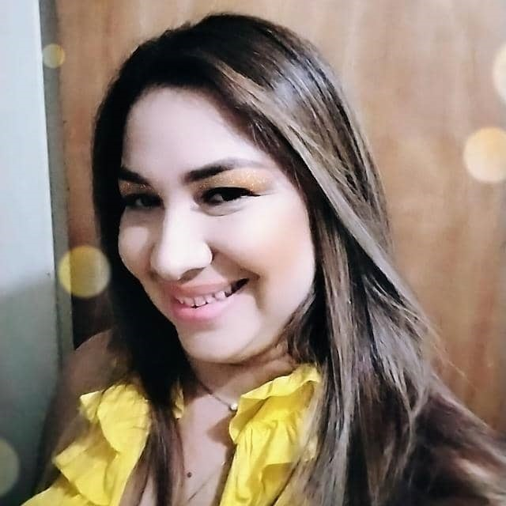

Bienvenidos a nuestro proyecto socio productivo nosotros somos un grupo de estudiantes de la U.P.T.A.E.B, a continuacion les hablaremos de forma breve sobre todo el proceso y las actividades que tuvo que realizar el equipo de estudiantes para lograr concretar el proyecto.

La profesora Maria Mendoza

El coordinador del Mega Infocentro Lara Nicolas Daza
Nuestro proyecto tiene como objetivo que un grupo de estudiantes de la U.P.T.A.E.B realizara un proyecto socioproductivo que beneficie a las personas de alguna comunidad, en este caso la comunidad beneficiada fue la de Brisas del Obelisco,en donde se encuentra la Fundacion Mega Infocentro Lara,lugar donde se llevo a cabo el proyecto.
Esta fue la etapa inicial del proyecto en donde los integrantes del equipo empezaron con la labor de cumplir 20 horas de mantenimiento preventivo a los ordenadores de la institucion. Durante el proceso los miembros del equipo limpiaron fisicamente cada una de las computadoras del Mega-Infocentro, desde su pantalla, case, mouse, teclados, entre otros, hasta una limpieza fisica dentro del cpu, limpiando asi sus ventiladores y demas partes dentro del mismo
Posteriormente al ya haber culminado las horas de mantenimiento preventivo el equipo empezo con la elaboracion de la pagina utilizando el lenguage de HTML para la estructura, despliegue y contenido de la pagina web y el lenguaje CSS para el diseño grafico de la pagina.
Cabe destacar que esta pagina web contiene informacion acerca de:
Para finalizar el proyecto los integrantes del equipo tuvieron que organizar una capacitacion a estudiantes o usuarios del Mega-Infocentro durante 10 horas, lugar donde se concientizo e informo a las personas que asistieron a la capacitacion comó y ¿por qué? dar un buen uso a cualquier tipo de equipo.
Temas que se hablaron durante la capacitacion fueron los siguientes:
Como se menciona al principio, este proyecto se realizo con el proposito de dar un beneficio a la comunidad seleccionada, en este caso los sujetos beneficiados son las personas que trabajan y hacen vida en el Mega-Infocentro Lara en conjunto de todas las personas y usuarios de la comunidad Brisas del Obelisco o del cualquier otra que quiera visitar la Institucion, asi como tambien la Universidad Politecnica Territorial Andres Eloy Blanco.
Los beneficios que recibio la Fundacion Mega-Infocentro Lara y la comunidad Brisas del Obelisco son: